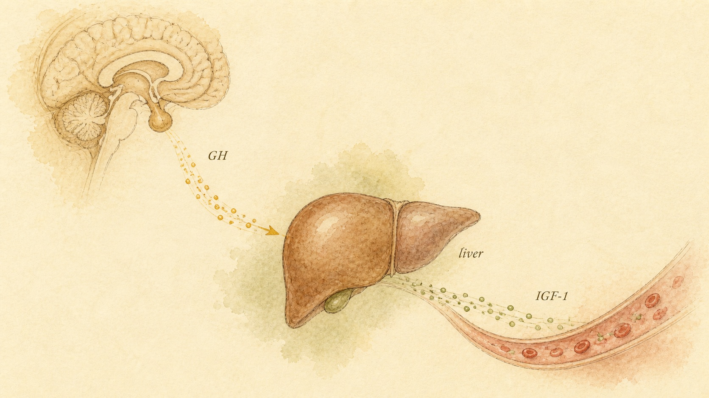
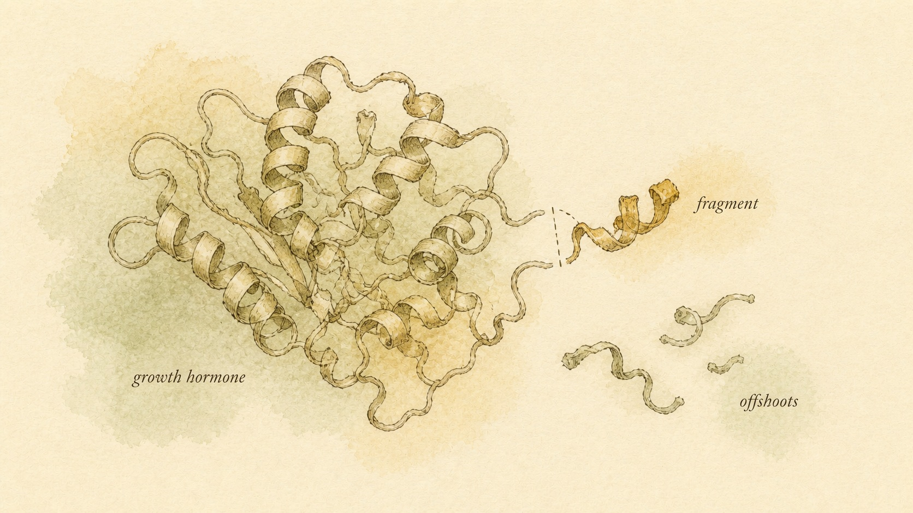

Growth Hormone, IGF-1, and the Growth-Factor Offshoots
Almost everything exogenous growth hormone is credited with doing, it does by placing a phone call to the liver. Understand that one call and the entire grey-market family built around it, LR3, DES, AOD-9604, PEG-MGF, stops looking like a menu of separate drugs and starts looking like variations on a single, well-mapped signal.
Open a grey-market peptide vendor's catalog page and growth hormone (GH) rarely sits alone. Scroll down the same page and you will typically find it flanked by a small crowd of relatives built from its downstream partner, insulin-like growth factor 1 (IGF-1): "IGF-1 LR3," "IGF-1 DES," "AOD-9604," sometimes listed under its older name "GH Frag 176-191," and "PEG-MGF," a pegylated, meaning chemically bonded to polyethylene glycol (PEG), version of a muscle-repair splice variant called mechano growth factor (MGF). The product photography treats them as siblings, same vial shape, same lyophilized white powder, same price-scales-with-claimed-potency logic. The marketing copy treats them as a coordinated toolkit: GH for "the base," an IGF-1 analog for "amplifying the signal," a fragment for "the fat-loss piece without the growth-hormone baggage," a pegylated splice variant for "targeted repair." It reads like a catalog of interchangeable options within one drug class, and that framing is the first thing this chapter needs to dismantle.
It is not one drug class. It is one hormone axis, GH made in the pituitary gland and insulin-like growth factor 1 (IGF-1) made mostly in the liver in response to it, plus a set of chemically engineered or synthetically reconstructed variants that borrow pieces of that axis's molecules without inheriting the axis's evidence base. Some of those variants are genuine laboratory tools repurposed for grey-market sale. Some are peptides corresponding to a small fragment of a much larger hormone, sold on the strength of a rodent study from decades ago. One is a pegylated version of a signal the body was never built to let circulate for very long in the first place. None of that is obvious from a vendor's product grid, where everything looks like a menu of comparable strength. It becomes obvious the moment you understand the actual axis these products are all, in one way or another, trying to imitate, extend, or fragment.
Our thread through this chapter is a learner named Bjorn, 24, who trains seriously and spends a fair amount of time in the same forums and vendor pages described above. Bjorn had picked up three specific ideas before starting this course: that GH itself directly builds the muscle people credit it with building, that IGF-1 LR3 is a "more targeted, more precise" version of that same effect, and that a fragment like AOD-9604 lets a person get GH's fat-burning reputation without any of its downsides. He is not here for a recommendation about whether to use anything, and this course will not push him, or you, toward one. He wants to understand what each of these molecules actually does at the receptor level, what evidence exists behind the specific claims made about each one, and where the honest risk picture sits, before he trusts anything a vendor page tells him. That is exactly the order this chapter follows.
The hormone, the receptor, and the order it gives the liver
Growth hormone is a peptide hormone, a chain of 191 amino acids, secreted by the anterior pituitary gland in a pulsatile pattern rather than a steady drip, with the largest pulses typically occurring during deep sleep and after intense exercise. Secretion is governed by two opposing hypothalamic signals covered in earlier chapters of this course, growth hormone-releasing hormone (GHRH), which stimulates release, and somatostatin, which suppresses it, with the balance between them shaping the size and timing of each pulse. Once released into circulation, GH reaches essentially every tissue in the body, but its most consequential target for the purposes of this chapter is the liver.
GH acts by binding the growth hormone receptor (GHR), a receptor that sits on the surface of hepatocytes and many other cell types. Ligand binding causes two GHR molecules to pair up (dimerize), which activates a receptor-associated enzyme called Janus kinase 2 (JAK2). Activated JAK2 phosphorylates a family of proteins called signal transducers and activators of transcription, most importantly one named STAT5, which then travels into the nucleus and increases transcription of the gene that codes for IGF-1. In plain terms: GH does not build tissue directly in most of the body. It arrives at the liver, docks on a receptor, and triggers a signaling cascade whose main output is instructing the liver to manufacture and release a second hormone, IGF-1, into the bloodstream. Most of what GH gets credit for accomplishing in an adult body, it accomplishes by way of that second hormone.
This liver-dominant, endocrine pool of IGF-1 is why a blood test measuring circulating IGF-1 is used clinically as the most reliable single marker of a person's overall GH activity over recent weeks, considerably more reliable than trying to catch a single GH pulse on a blood draw, since GH itself spikes and clears within minutes while liver-derived IGF-1 stays comparatively stable in circulation. Some IGF-1 is also produced locally, in bone, cartilage, and muscle tissue itself, acting close to where it is made rather than traveling through the bloodstream, a distinction this chapter returns to directly when it reaches PEG-MGF later on. But the number a clinician reads off a lab panel, and the number driving most of the systemic, whole-body growth-promoting activity this chapter is concerned with, is overwhelmingly liver output.
It would be a mistake, however, to treat GH as nothing more than a messenger that hands off all of its work to IGF-1. GH also has a second, entirely separate line of action, one that does not run through the liver or through IGF-1 at all, aimed mainly at adipose tissue and glucose handling. Acting directly on fat cells and muscle tissue, GH promotes lipolysis, the breakdown of stored fat into circulating fatty acids for fuel, and it directly opposes insulin's action, reducing glucose uptake into muscle and fat so that more glucose stays available in the blood, historically described as GH's diabetogenic, or insulin-antagonistic, action. This is the single most important structural fact to carry through the rest of this chapter: GH is a two-track molecule. One track is indirect, slow, and growth-promoting, running through IGF-1 made mainly in the liver. The other track is direct, faster, and metabolically disruptive, running straight from the GH receptor to fat and muscle tissue without needing IGF-1 at all. Every benefit and every risk profile discussed in this chapter traces back to one of these two tracks, and confusing them is the single most common error a learner makes when trying to reason about this entire compound family.

IGF-1 itself: receptor, binding proteins, and where it is actually used medically
IGF-1 is not a distant cousin of insulin in name only. Structurally, the IGF-1 receptor is closely related to the insulin receptor, both are tyrosine kinase receptors from the same evolutionary family, and IGF-1 is capable of weakly activating the insulin receptor while insulin is capable of weakly activating the IGF-1 receptor. Once bound to its receptor, IGF-1 triggers two major downstream signaling cascades, the PI3K/AKT pathway, which drives cell growth, protein synthesis, and cell survival, and the RAS/MAPK pathway, which drives cell proliferation. This receptor-level relationship with insulin is not a minor technical detail. It is the direct reason IGF-1, at a sufficiently high concentration, can produce genuine insulin-like effects in the body, including a drop in blood glucose, an important safety fact this chapter returns to when it reaches the engineered IGF-1 analogs.
Circulating IGF-1 does not travel freely through the bloodstream the way many hormones do. More than 99 percent of it is bound to a family of six related proteins called insulin-like growth factor binding proteins (IGFBPs), predominantly IGFBP-3, which together with a third protein form a large ternary complex that holds most circulating IGF-1 in a stable, inactive reservoir with a half-life measured in hours rather than minutes. According to Clemmons (2018), this binding protein system is not a passive shipping container, it is an actively and independently regulated gatekeeper, with each IGFBP's own synthesis and degradation responding to nutritional state, insulin levels, and other hormones, meaning the total IGF-1 concentration on a lab report does not by itself tell a clinician, or a learner, how much free, receptor-available IGF-1 a given tissue is actually experiencing at any one moment. Only the small unbound fraction is immediately available to activate a receptor, and the body clearly evolved this buffering system for a reason, a point worth remembering once this chapter reaches the analogs engineered specifically to escape it.
Medically, GH itself has a defined, well-established set of approved uses: diagnosed GH deficiency in children and adults, specific pediatric growth disorders, and a small number of chronic wasting conditions, each requiring a clinician's diagnosis and monitoring. Recombinant human IGF-1 (marketed as mecasermin) has a much narrower approved indication: severe primary IGF-1 deficiency, most notably in a rare genetic condition where the GH receptor itself does not function, so the liver cannot respond to GH no matter how much is present, and administering GH would accomplish nothing. In that specific circumstance, and essentially only that circumstance, replacing IGF-1 directly is the only pharmacological option that makes physiological sense. Naming this plainly matters, because it sets the evidence bar the rest of this chapter measures every grey-market variant against: GH is used for defined deficiency, studied directly in humans, with a real prescribing label. IGF-1 itself is used medically only for one specific, rare, severe deficiency state. Everything covered from this point forward, the engineered analogs, the fragments, the pegylated splice variant, departs from that narrow, approved core.
Long R3 and Des IGF-1: re-engineering the molecule to dodge its own leash
Two of the most commonly sold grey-market IGF-1 products are chemically modified versions of the native hormone, built to escape the binding-protein buffering system described in the previous section. The first, generally sold as "IGF-1 LR3" (Long Arg3 IGF-1), carries two changes from native human IGF-1: a substitution of arginine for glutamate at position 3 of the amino acid chain (the "R3"), and a 13-amino-acid extension added onto the molecule's N-terminal end (the "Long"). The second, sold as "IGF-1 DES," is des(1-3)-IGF-1, native IGF-1 with its first three N-terminal amino acids removed entirely. Neither modification was originally developed with a bodybuilding or physique application in mind. According to Zhao and colleagues (1993), both were built as laboratory research tools specifically because these particular structural changes dramatically reduce the molecule's binding affinity for the IGFBP family described above, while leaving its ability to activate the IGF-1 receptor itself largely intact.
That single structural fact, reduced IGFBP binding, is the entire basis of the marketing built around both analogs. Since more than 99 percent of native IGF-1 circulates bound and buffered, an analog that resists that binding circulates with a much larger fraction of itself available in the free, receptor-active form at any given dose. Grey-market marketing frames this as "more potent per microgram" and a "longer, more sustained anabolic signal," particularly when injected locally into muscle tissue, playing on the idea that a molecule poorly retained by IGFBPs will linger and act near its injection site before being cleared systemically. That idea has some plausibility in rodent and cell-culture work. It has essentially no controlled human dosing or outcome data behind the specific muscle-building or fat-loss claims built on top of it.
The honest evidence grade for both LR3 and DES-IGF-1, evaluated against the claims actually made about them in a physique context, is mechanistic and animal-derived, not clinical. Neither analog has been through a dedicated randomized human trial studying muscle growth or fat loss at the doses circulating in grey-market use, and neither has ever advanced through a formal human drug-development program for any indication. Both remain, by definition, unapproved and unregulated research chemicals. The risk profile follows directly from the same structural feature that makes them attractive to sell: because they are engineered to be more receptor-active per unit and to linger longer than native IGF-1, and because the IGF-1 receptor shares real functional overlap with the insulin receptor described earlier, hypoglycemia is a documented, mechanistically predictable risk with both compounds. That risk is compounded by the reality that grey-market vials carry no reliable, independently verified potency testing, leaving a learner with no dependable way to know how much biologically active analog a given dose actually contains.
AOD-9604 and the fragment 176-191 story: the fat-loss piece that did not hold up
In the 1990s, researchers investigating GH's biology noticed that its fat-mobilizing (lipolytic) activity and its growth-promoting activity might be structurally separable, since different regions of the full 191-amino-acid molecule interact with different parts of the downstream signaling machinery. Attention focused on the hormone's C-terminal region, roughly amino acids 176 through 191, reported in early animal work to retain fat-mobilizing activity without carrying the same degree of growth-plate or insulin-antagonist activity as the intact hormone. According to Ng and colleagues (2000), a synthetic peptide built around this domain, later stabilized with an added N-terminal tyrosine residue and developed under the name AOD9604, reduced body weight gain and increased adipose tissue lipolytic activity in obese rodents dosed daily over roughly three weeks, without producing the same drop in insulin sensitivity that chronic treatment with intact GH caused in the same animals.
That early rodent finding is precisely what launched the "fat-loss fragment" marketing built around both AOD-9604 and its close, less-modified relative, sold today simply as fragment 176-191. The pitch, then and now, is genuinely appealing: get GH's fat-mobilizing effect from a small, targeted piece of the molecule, while leaving behind the growth-plate stimulation and the blood-sugar-raising direct action carried by the full-length hormone described earlier in this chapter.
It did not hold up at the scale that actually matters. The early animal signal was promising enough that AOD9604 was carried into a formal human drug-development program in the 2000s, including placebo-controlled human obesity trials designed specifically to test whether the fat-loss effect seen in rodents would translate. It did not translate into a result that supported approval, and the development program behind the compound was ultimately discontinued rather than advanced toward market. What survives in the grey market today is a peptide whose solid evidence base still traces back to rodent and cell-culture work published more than two decades ago, sold under marketing language that quietly omits the part where the actual human trials underwhelmed. According to Cox and colleagues (2014), AOD9604 is formally banned by global anti-doping authorities and detectable in urine using validated testing methods precisely because it is correctly understood as a growth hormone-derived performance and physique compound, a regulatory classification that reflects its origin and its potential for misuse, not a validation of its effectiveness.

PEG-MGF: pegylating a splice variant that was never meant to travel far
The gene that codes for IGF-1 does not produce only one product. Through a process called alternative splicing, the same gene generates multiple distinct transcripts. The dominant, liver-produced, systemic form is called IGF-1Ea, the molecule this chapter has been discussing throughout. But muscle tissue that has just been mechanically loaded or damaged, by a hard training session or an actual injury, transiently produces a different splice variant that researchers named mechano growth factor (MGF), also identified as IGF-1Ec, carrying a distinct C-terminal peptide sequence not present in the systemic hormone at all. According to Goldspink (2012), MGF is produced locally and acts locally, autocrine and paracrine signaling rather than traveling through the bloodstream, and its apparent role is activating dormant muscle satellite (stem) cells so they can donate nuclei to the stressed muscle fiber, kick-starting local repair and hypertrophy far faster than the slower, diffuse arrival of systemic, liver-made IGF-1 could manage on its own.
The grey-market product sold as "PEG-MGF" is a synthetic peptide built to mimic that unique C-terminal MGF sequence, chemically attached to polyethylene glycol (PEG) through a process called pegylation, which increases a peptide's effective molecular size and slows its clearance from the body, extending its circulating presence from a matter of minutes to potentially days. The marketing built on that chemistry claims that a synthetic, injectable, long-circulating version of a naturally local and transient repair signal can deliver the same local muscle-repair benefit on demand, essentially trying to convert what the body designed as a brief, localized whisper into a sustained, systemic broadcast.
The evidence sitting underneath that claim is almost entirely preclinical, and it splits cleanly in two. The MGF splice variant itself is real, described in detail in animal and cell-culture research, and genuinely interesting biology. The synthetic, pegylated product sold under its name is a different matter: it has no meaningful published human safety or efficacy data behind it, is chemically distinct enough from native MGF that findings about the natural splice variant cannot simply be assumed to carry over to the injectable product, and independent laboratory analyses of grey-market vials have repeatedly documented instability and degradation problems with the peptide itself, on top of the underlying absence of human trial data.
Reading the honest evidence ladder across the whole family
Zoom out, and the most useful thing to take from this chapter is not any single fact about any single compound, it is where each one sits on the evidence ladder introduced earlier in this course. At the top sits GH itself: an approved medication for defined deficiency states, studied directly in controlled human trials, including trials conducted in the exact population, healthy, young, physically active adults, that most grey-market users actually resemble. According to Liu and colleagues (2008), a systematic review of randomized controlled trials in that specific population found that GH administration increased lean body mass modestly, by roughly two kilograms on average, but did not improve measured strength or exercise capacity, and participants receiving GH experienced soft tissue edema and fatigue more often than those who did not. Blood lactate levels during exercise, a marker connected to the direct, IGF-1-independent metabolic track described earlier in this chapter, were also elevated in GH-treated groups across several of the included studies. This is, worth sitting with for a moment, the single best-characterized compound in this entire chapter, tested directly in the population everyone chasing these products most resembles, and even it did not deliver the strength or performance outcome its reputation promises.
Below GH sits IGF-1 itself, whose approved medical use is narrow but whose underlying physiology, IGFBP regulation, receptor cross-reactivity with insulin, is well characterized in humans, even though almost none of that characterization comes from bodybuilding-context dosing. Below that sit the engineered analogs, LR3 and DES-IGF-1: mechanistically explainable, unapproved, essentially untested in controlled human trials for the specific claims made about them. At the bottom sit the fragments and splice-derived products, AOD-9604 and fragment 176-191, and PEG-MGF, each resting on a real, published finding that simply did not survive contact with a rigorous human trial in AOD-9604's case, or was never subjected to one in its marketed synthetic form at all in PEG-MGF's case.
"Claims that growth hormone enhances physical performance are not supported by the scientific literature."
Hau Liu et al., Annals of Internal Medicine (2008)
That line is worth reading twice, because it is describing GH itself, the compound with the strongest, most direct, most human-relevant evidence base of everything covered in this chapter. Every other product discussed here sits on a thinner evidence foundation than that. Holding that ordering in mind, rather than treating the whole family as a single undifferentiated menu, is the actual skill this chapter is teaching.
What happens when GH and IGF-1 signaling run high
Everything in this section follows mechanically from the two tracks laid out at the start of this chapter, GH's direct action on fat and glucose, and the growth-promoting reach of IGF-1 once it is elevated for long enough. None of these risks are exotic side effects unrelated to the biology already covered. They are what that biology looks like when it runs at a higher level, for longer, than the body's own feedback loops were built to sustain.
Insulin resistance and higher blood glucose
The direct, IGF-1-independent track described earlier in this chapter, GH acting on fat and muscle tissue to reduce glucose uptake and increase circulating free fatty acids, is not a rare or idiosyncratic side effect. It is the predictable expression of the same GH receptor pathway responsible for GH's other actions, and it shows up quickly. Elevated exercise lactate and reduced glucose disposal were both observed in the short-term controlled trials reviewed by Liu and colleagues (2008), well within weeks of GH exposure. Sustained elevation of GH and IGF-1, whether from a hormone-secreting tumor or from repeated exogenous use, raises the long-term risk of measurable insulin resistance and, in individuals already predisposed, overt hyperglycemia.
Fluid retention and carpal-tunnel-like symptoms
GH promotes sodium and water retention by the kidney, partly through activation of the renin-angiotensin-aldosterone system, producing peripheral edema most noticeable in the hands, feet, and soft tissue around joints. When that swelling compresses the median nerve as it passes through the wrist's carpal tunnel, the result is numbness, tingling, and weakness in the hand and fingers, a carpal-tunnel-like presentation that ranks among the more commonly reported adverse effects of GH exposure. It is a mechanical consequence of a metabolic effect, fluid and tissue swelling pressing on a nerve, not a separate, unrelated problem, and it generally tracks with dose and duration, though it can be uncomfortable enough on its own to limit tolerability well before any more serious complication develops.
Acromegalic tissue changes with chronic excess
The clearest natural demonstration of what sustained, unchecked GH and IGF-1 excess does to a human body already exists, in the clinical condition acromegaly, caused most often by a GH-secreting pituitary tumor. According to Villar-Taibo and colleagues (2026), chronic GH and IGF-1 excess drives progressive soft tissue and skeletal overgrowth, thickened skin, enlarged hands, feet, and jaw, degenerative joint disease, organ enlargement, and a cluster of cardiovascular and metabolic complications including hypertension, cardiomyopathy, obstructive sleep apnea, and impaired glucose tolerance, developing gradually enough that the changes are often only recognized years later, when old photographs are compared side by side. That slow, cumulative tissue-remodeling picture is the honest long-horizon risk behind any strategy that keeps GH or IGF-1 signaling elevated for extended periods, whatever the source. Tissue does not distinguish between a tumor and a repeated external one.
The cancer-signaling concern
The IGF-1 receptor sits upstream of the PI3K/AKT and RAS/MAPK pathways described earlier in this chapter, both of which are also central growth and survival pathways broadly implicated in cancer biology. IGF-1 is, structurally, a mitogenic growth signal, a molecule whose job is telling cells to divide and survive, and pushing that signal higher is a theoretical concern that deserves to be stated plainly rather than dismissed or exaggerated in either direction. According to Guevara-Aguirre and colleagues (2023), the human evidence connecting GH and IGF-1 status to cancer risk is genuinely instructive from both ends of the spectrum: people with acromegaly, GH and IGF-1 excess, show a measurably higher incidence of certain cancers, particularly colorectal cancer, while a well-studied cohort of people with a rare genetic condition producing lifelong, profoundly low GH and IGF-1 signaling shows markedly reduced cancer incidence despite carrying other metabolic risk factors, including obesity. Neither observation proves that raising IGF-1 with an external analog, fragment, or GH itself will cause cancer in any particular individual, this is population-level, correlational evidence gathered across entire cohorts, not a controlled dose-response experiment in humans. But it is exactly why "it's just a growth signal" is not a reassuring sentence in this specific context, and why the theoretical cancer-signaling concern belongs in any honest accounting of this compound family's risk profile, stated as a mechanistic fact that follows directly from what IGF-1 actually does at the receptor level, not as a scare tactic layered on top of the biology.
Case study: Bjorn and the family that was not one
Running Bjorn's three assumptions back through this chapter resolves each in turn, and the pattern of correction, not any single fact, is the real content here. His first assumption, that GH directly builds muscle, is corrected by the very first section of this chapter: GH's growth-promoting reach runs mainly through a second hormone, IGF-1, manufactured by the liver in response to a GH signal, with GH itself carrying a separate, direct, metabolically disruptive track aimed at fat and glucose rather than muscle tissue directly. Crediting GH itself with the muscle-building result skips the actual intermediary step doing most of that work.
His second assumption, that IGF-1 LR3 is more targeted and precise than GH, inverts what the modification actually does. LR3's entire design rationale is reducing its affinity for the IGFBP family, the body's own buffering system for IGF-1 signaling, described in this chapter's second section. Escaping that buffering system is not precision, it is deregulation, and it comes with a real, mechanistically predictable hypoglycemia risk tied directly to the receptor overlap between IGF-1 and insulin covered in the same section.
His third assumption, that AOD-9604 delivers GH's benefit without GH's cost, ran headlong into the actual history of the compound. A promising rodent finding from Ng and colleagues (2000) launched a real human drug-development program, including placebo-controlled obesity trials, and those trials did not produce a result that supported approval. What circulates in the grey market today is a peptide resting on decades-old animal data, marketed in a way that omits the part where its own human trials underwhelmed.
What Bjorn actually walked away with matters more than any single fact along the way. He did not leave with a verdict on any specific compound or a ranking of which one is "worth it." He left with a working model: GH's growth-promoting power runs mostly through IGF-1, made in the liver; IGF-1 itself is tightly regulated by a binding-protein system the grey-market analogs are specifically engineered to escape; and the fragments and splice-derived products at the bottom of the family tree rest on the thinnest evidence of anything covered in this chapter, however confidently they get marketed. That model does not answer every question Bjorn might eventually have about a specific product. It gives him the tools to ask a sharper question of the next vendor page he reads, which is exactly what this chapter is for.
Where this course stops: understanding is not permission
Before this chapter closes, the frame governing this entire course needs to be stated plainly again, because it shapes what these nine chapters are for and what they are deliberately not for. This is education and harm reduction. We explain the biochemistry, the mechanism, the honest evidence grade behind every specific claim, and the intended or claimed purpose behind each compound covered, descriptively. We do not provide dosing guidance, cycle or stack designs, or sourcing information, and nothing in this chapter is meant to function as a green light or a how-to guide for using any of the compounds it describes.
That boundary follows directly from the biology itself, not from a legal formality bolted onto it afterward. Everything covered today, the GH-to-liver-to-IGF-1 axis, the receptor-level reason LR3 and DES-IGF-1 behave differently from native IGF-1, the specific human trial history behind AOD-9604, the mechanism connecting PEG-MGF's chemistry to its own risk profile, is true independent of whether any individual reading it ever acts on it. Understanding this material has value on its own, whether the person doing the learning is a learner like Bjorn evaluating a training partner's choice, someone weighing a decision for themselves, or simply someone who wants to be able to read a vendor's marketing claim with real knowledge behind the evaluation. The legal status of these compounds varies by jurisdiction, and this course does not offer legal advice of any kind. What it offers is the mechanistic foundation that makes every later, more specific chapter in this course legible, including the chapters ahead on myostatin biology, metabolic peptides, and the grey market's contamination and legality risks more broadly.
Decisions about using GH, IGF-1, or any of the offshoots covered in this chapter, and the ongoing medical monitoring of anyone already doing so, belong with a licensed physician who can order and interpret the relevant bloodwork, including fasting glucose, insulin, and IGF-1 levels, in the context of an individual's actual health history. That remains true regardless of how thoroughly a person understands the receptor biology described in this chapter. Mechanism explains what a molecule does in general. It cannot tell a specific person, with a specific medical history, what is safe for them, and this chapter does not pretend otherwise.
Key Takeaways
- Growth hormone (GH) acts through two separate tracks: an indirect, liver-mediated track that produces systemic insulin-like growth factor 1 (IGF-1) and drives most growth-promoting effects, and a direct track on fat and muscle tissue that opposes insulin and raises blood glucose, independent of IGF-1 entirely.
- Circulating IGF-1 is tightly regulated by a family of insulin-like growth factor binding proteins (IGFBPs), predominantly IGFBP-3, which buffer more than 99 percent of it into an inactive reservoir. Grey-market analogs like IGF-1 LR3 and IGF-1 DES are engineered specifically to escape this buffering system.
- AOD-9604 and fragment 176-191 correspond to the C-terminal end of the GH molecule and showed promising fat-loss activity in early rodent studies, but the human obesity trials built on that finding did not confirm a meaningful benefit, and the drug-development program behind AOD-9604 was discontinued.
- PEG-MGF is a pegylated synthetic version of mechano growth factor (MGF, or IGF-1Ec), a locally acting IGF-1 splice variant produced by mechanically stressed muscle. Pegylation extends the molecule's circulating presence, directly undoing the brief, local design that defines the natural signal, with no meaningful human safety or efficacy data behind the synthetic product.
- GH itself carries the strongest evidence base in this entire family, tested directly in healthy, young, physically active adults, and even that evidence shows increased lean mass without improved strength or exercise capacity, alongside real risks including edema and elevated exercise lactate.
- Sustained elevation of GH and IGF-1 signaling carries real, mechanistically grounded risks: insulin resistance and higher blood glucose, fluid retention with carpal-tunnel-like symptoms, acromegalic tissue changes with chronic excess, and a theoretical but mechanistically real cancer-signaling concern tied to IGF-1's role as a mitogenic growth signal.
If GH's growth-promoting reach runs mostly through IGF-1, the next obvious question is what actually holds muscle growth back in the first place, and whether that brake can be targeted directly rather than through the GH and IGF-1 axis at all. Chapter 5 turns to myostatin, the body's own negative regulator of muscle mass, and the follistatin and ActRIIB-pathway compounds built to inhibit it, along with the honest, mostly preclinical and safety-flagged evidence behind that entirely different approach.
References
Clemmons, D. R. (2018). Role of IGF-binding proteins in regulating IGF responses to changes in metabolism. Journal of Molecular Endocrinology, 61(1), T139-T169. https://doi.org/10.1530/JME-18-0016
Cox, H. D., Smeal, S. J., Hughes, C. M., Cox, J. E., & Eichner, D. (2014). Detection and in vitro metabolism of AOD9604. Drug Testing and Analysis, 7(1), 31-38. https://doi.org/10.1002/dta.1715
Goldspink, G. (2012). Age-related loss of muscle mass and strength. Journal of Aging Research, 2012, 158279. https://doi.org/10.1155/2012/158279
Guevara-Aguirre, J., Peña, G., Acosta, W., Pazmiño, G., Saavedra, J., Soto, L., Lescano, D., Guevara, A., & Gavilanes, A. W. D. (2023). Cancer in growth hormone excess and growth hormone deficit. Endocrine-Related Cancer, 30(10), e220402. https://doi.org/10.1530/ERC-22-0402
Liu, H., Bravata, D. M., Olkin, I., Friedlander, A., Liu, V., Roberts, B., Bendavid, E., Saynina, O., Salpeter, S. R., Garber, A. M., & Hoffman, A. R. (2008). Systematic review: the effects of growth hormone on athletic performance. Annals of Internal Medicine, 148(10), 747-758. https://doi.org/10.7326/0003-4819-148-10-200805200-00215
Ng, F. M., Sun, J., Sharma, L., Libinaka, R., Jiang, W. J., & Gianello, R. (2000). Metabolic studies of a synthetic lipolytic domain (AOD9604) of human growth hormone. Hormone Research, 53(6), 274-278. https://doi.org/10.1159/000053183
Villar-Taibo, R., Fernández-Rodríguez, E., & Bernabéu, I. (2026). Acromegaly and clinical manifestations. Vitamins and Hormones, 131, 153-193. https://doi.org/10.1016/bs.vh.2025.10.004
Zhao, X., McBride, B. W., Trouten-Radford, L. M., & Burton, J. H. (1993). Effects of insulin-like growth factor-I and its analogues on bovine hydrogen peroxide release by neutrophils and blastogenesis by mononuclear cells. Journal of Endocrinology, 139(2), 259-265. https://doi.org/10.1677/joe.0.1390259